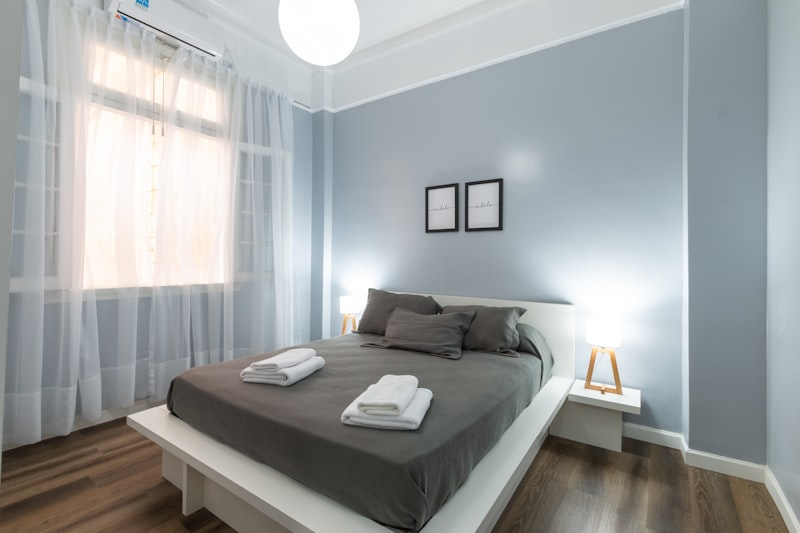

Our Work
See the quality of our professional services




From custom desert homes to ranch properties — we keep Cave Creek pools crystal clear, year-round. No contracts, no hassle, just clean water.
Complete pool care built for Cave Creek's unique desert conditions
Reliable weekly visits to keep your pool clean, balanced, and swim-ready. We handle the chemistry so you don't have to.
Details →Pump died? Filter cracked? We diagnose and fix pool equipment fast — most repairs done same-day with parts in stock.
Details →Algae took over? Our green-to-clean process gets your pool back to blue in 48-72 hours. Guaranteed.
Details →Variable-speed pumps, salt systems, automation — we install energy-efficient upgrades that save you money.
Details →Cave Creek isn't your average suburb. Between the dust storms, hard water, and scorching summers, your pool faces challenges that out-of-town companies don't understand. We do.
"We've tried three different pool companies since moving to Cave Creek. These guys are the first ones who actually show up on time and do the job right. Our pool has never been cleaner."
— Sarah M., Cave Creek"After a monsoon storm trashed our pool, they had it spotless within two days. Excellent work and really fair pricing. Highly recommend for anyone in the area."
— Tom & Jackie W., Carefree"They replaced our old single-speed pump with a variable-speed model and our electric bill dropped noticeably. Knowledgeable, honest, and always professional."
— Mark D., Cave CreekProviding professional pool services throughout Cave Creek and neighboring communities:
See the quality of our professional services
Get a straight answer and a fair price. Request your free estimate today.
Get Free Estimate